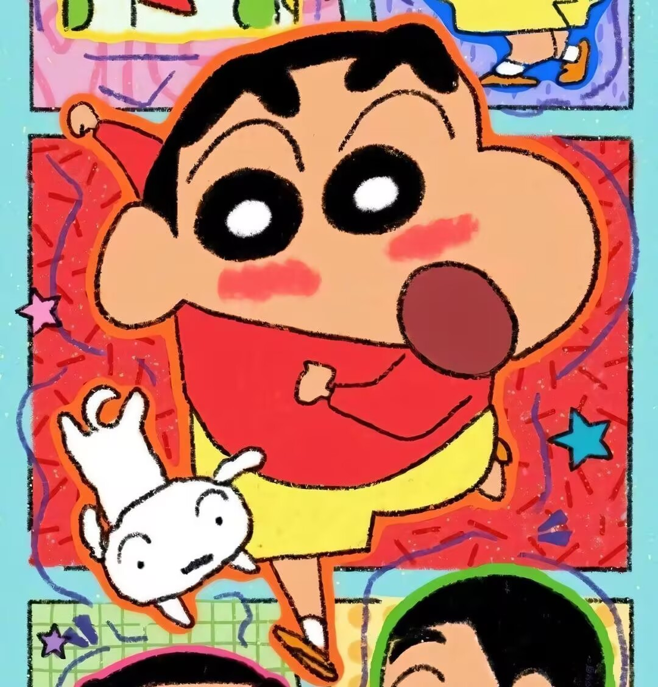
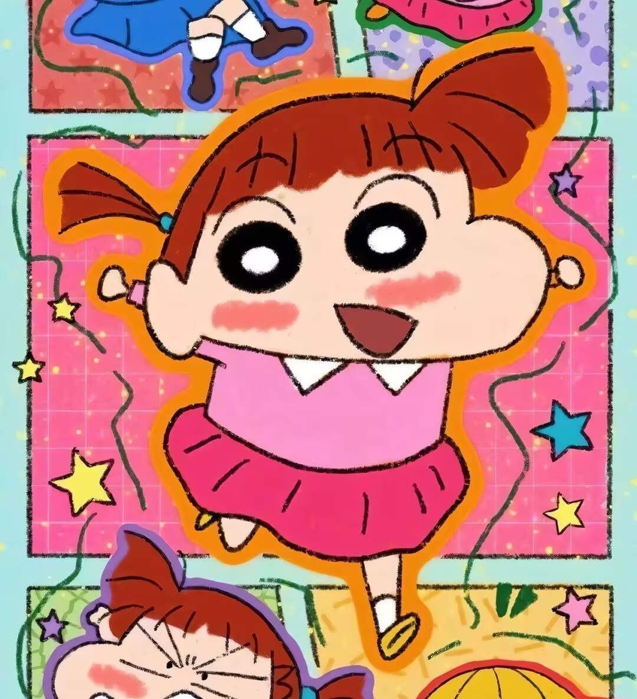
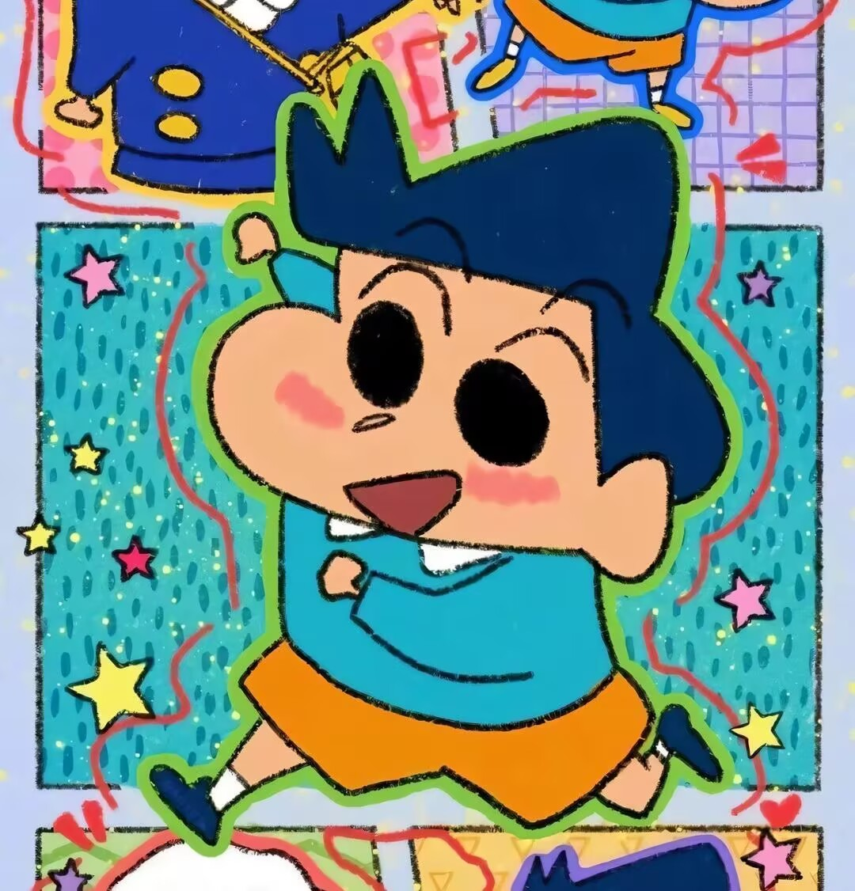
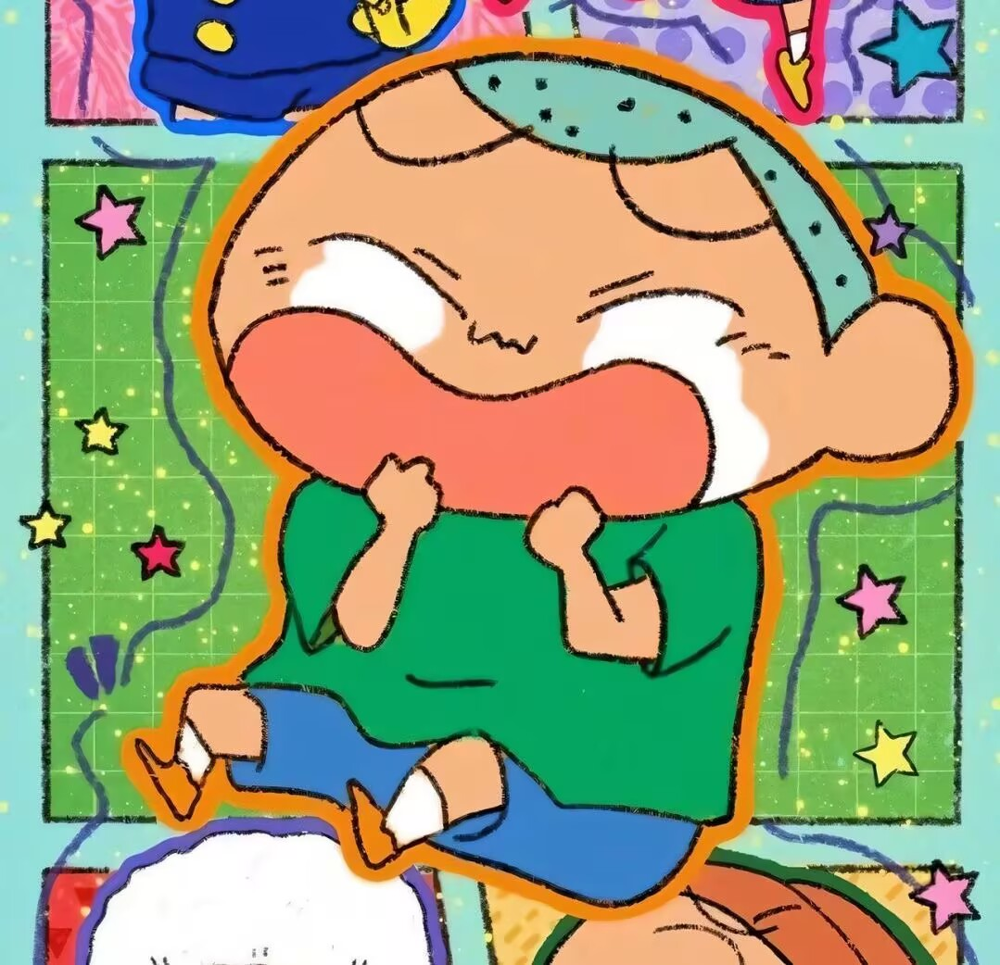
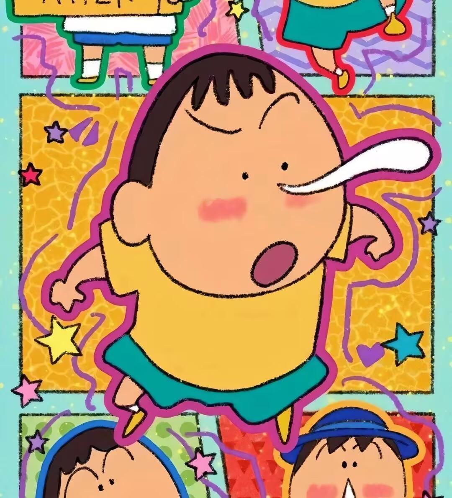

野原·新之助
就读双叶幼稚园向日葵班,春日部防卫队队员之一。在动画版中的招牌服装为红色短T-shirt配上黄色短裤、白色袜子、和黄色鞋子,发型为黑色平头。最爱的人是大原娜娜子。喜欢看动感超人、康达姆机器人和魔法少女可爱P。最喜欢吃的零食是巧克比(チョコビ)。喜欢把屁屁或大象露出来,经常搭讪漂亮的大姐姐。最讨厌吃青椒、洋葱和红萝卜。

樱田妮妮
个性强势，常要求春日部防卫队队员一起玩“超真实扮家家酒”，小爱的天敌。生气时经常拿幸福兔来出气。在其超真实扮家家酒中，通常饰演“美丽的”妻子，也常被防卫队其他成员暗中吐嘈。发型为下双马尾，人物前期是个典型的乖乖女，温和、爱哭、害羞，看到小新脱裤子会脸红。

风间彻
喜欢看魔法少女玛莉、魔法少女可爱P和动感超人,但对外宣称对卡通毫无兴趣。特征为卷翘的前刘海，以及蓝色上衣与橙色短裤。经常受小新的骚扰，但傲娇的他其实只是爱面子、自尊心强，并不想刻意表达自己对小新的感情，十分珍惜和春日部防卫队成员的友情。

佐藤正男
头型像饭团一样，住家位置经常被小新记错。迷恋酢乙女爱，做事经常落后。遇到困难或较恐怖的东西，哭的第一个就是他，但不小心反击时就会变成另种个性，喜欢看动感超人。

阿呆
总是流鼻涕，但是他的鼻涕非常特别。嗜好是收集各种石头和观察身边周围的东西，深藏不露，有丰富的知识。个性随和，除非遇到真的不喜欢的事物或游戏（如妮妮的扮家家酒），通常不会拒绝参加。也因此常常和小新玩一些旁人看不懂的游戏（如没有鬼的躲猫猫、想像躲避球等）。在妮妮的扮家家酒中，通常饰演一些无关紧要的角色（如婴儿、宠物等，甚至植物）。对石头异常执著，甚至会为此与朋友吵架，也会藉石头表达心意。